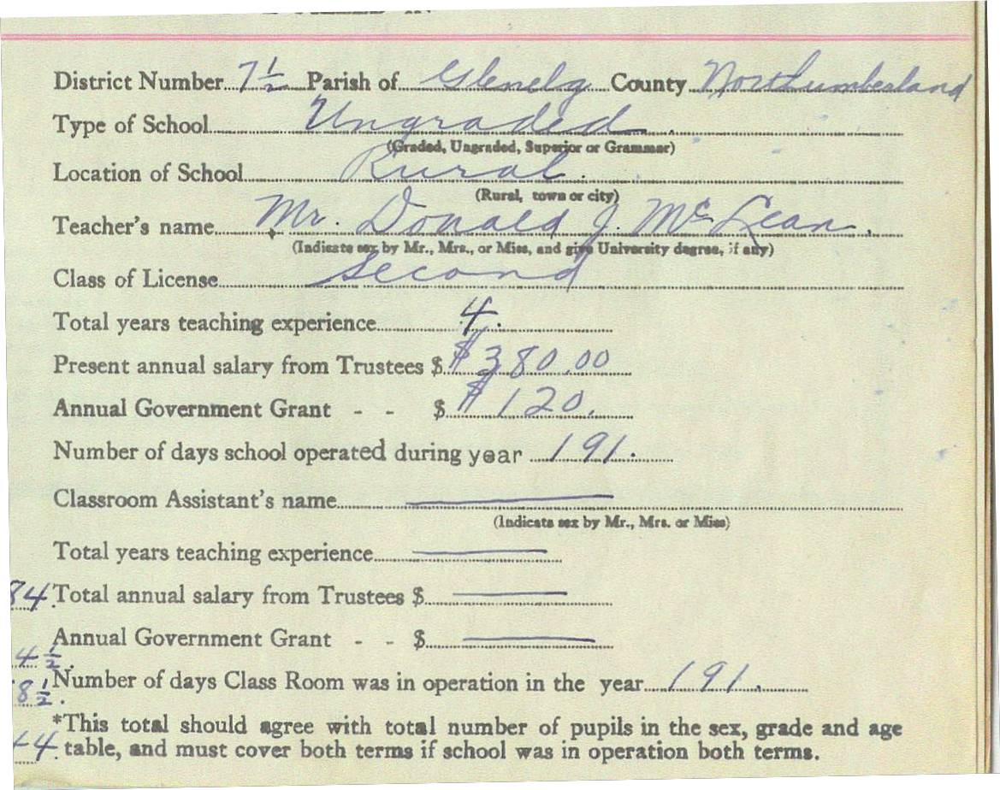

The Family Chronicle
No. 115 March 21, 2006
____________________________________________________________________

Taken from the Little Branch School register for the school year 1933-34
Follow-up
Donald Edge wrote:
“Our telephone hung in a box on the wall, and by cranking a handle on one side of the box you made a continuous ring in every house in Black River. To differentiate homes, our phone was 22--two long and two short cranks of the handle. Little Annie MacNaughton was the local telephone operator, and of course she got to hear everything, as could anyone else who picked up the phone whenever it rang anyone's number. There was a benefit to this, because a continuous cranking caused a continuous ringing in all the homes in the area, alerting families to a disaster such as a barn on fire, a forest fire, a sudden death.
Today the phones there are modern and private. The old MacNaughton house now has a street and a number (1008 North Black River Road) and a ZIP code (E1N 5T3) and a FAX number, and it has an Internet address with photographs. The telephone number is no longer 22; now it is 01 46 06 14 74. Try hand cranking that!”
Brakes
Braking systems have certainly changed for the better over the years.
Our Model A had mechanical brakes which means that a metal rod linked the brake pedal with the brake shoes on each wheel. Brake shoes moved out against the inside of the brake drum when the brakes were applied. Adjustments were possible through a turnbuckle, however, it was difficult to have or keep the setting just right with the result that it was not unusual for one wheel to have more pressure than another. As a result, cars often swerved if brake pedals were jammed hard. Replacement brake shoes were usually replaced at home.
Our 1939 Ford truck had hydraulic brakes which allowed the pressure to be applied evenly to all four brake shoes making smoother stops and fewer skids. It seemed that they were in constant need of repair. Again, often done at home. Most often the problem was with leaking wheel and master cylinders. Many a time, I recall my older brothers remove the brake drums to clean or replace rubbers in the cylinders. Sometimes it was a grain of sand while other times it was worn parts. I assume that the quality of the rubber during the war years was also a problem. And each time the brakes were worked on, the brake lines had to be bled to remove the air from the lines. Air in the lines meant a soft brake pedal and less pressure when braking. While much of the repair was done at home, I also recall frequent visits to Nevin’s Garage which was just up and on the opposite side of the street from Calvin Presbyterian church. Driving with little or no brake pressure could be a bit tricky.
Since then, cars come equipped with disk brakes which, among other things, are self adjusting for normal wear and current vehicles have an ABS (Automatic Braking System) which means that brake pressure is adjusted on each wheel electronically to ensure smooth braking.
The Family Chronicle (Copyright) is an occasional newsletter published by Don Glendenning and posted on the family website. It is intended to share information about my family, community and the times in which I grew up. While every effort is made to be accurate, errors are likely to occur. Comments, enquiries and information may be sent to 62 Queen Elizabeth Drive, Charlottetown, PEI, C1A 3A9. Tel: 902 892 5859. Email: dglende@auracom.com Web: www.glendenning.net/don